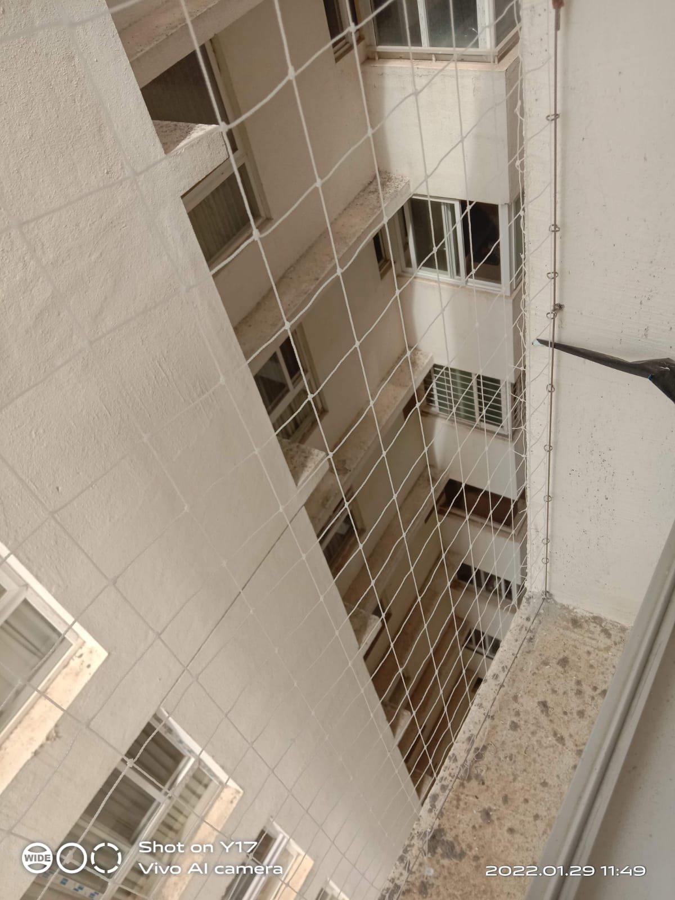
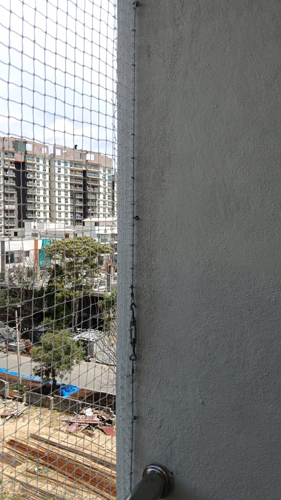
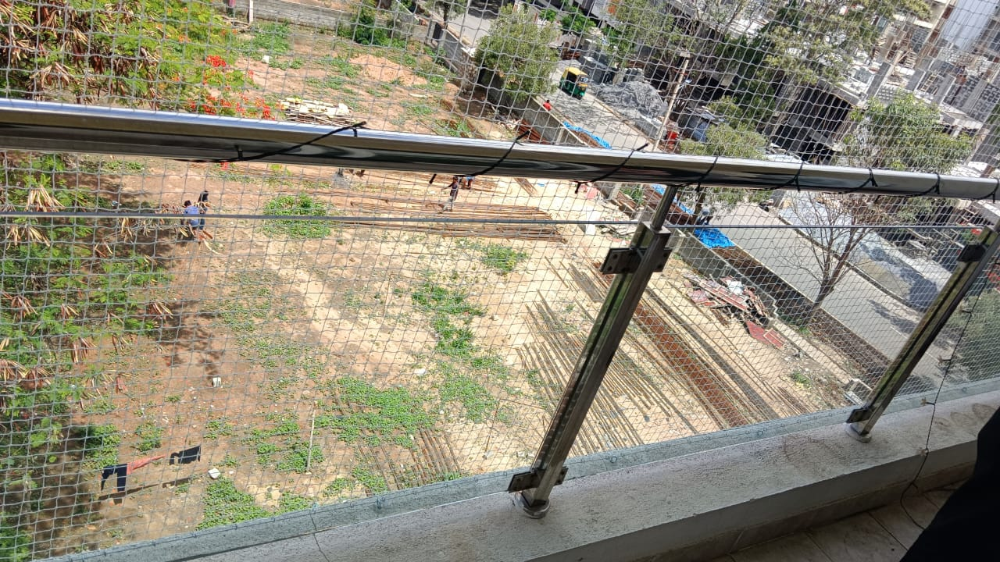

Balcony Bird Net Installation in Bengaluru – Professional Pigeon Net Service by SIPC
SIPC is a PAN India pest and bird control company providing professional balcony bird net installation across Bengaluru...
Our Recent Bird Net Installations in Bengaluru




Why Balcony Bird Net Installation is Necessary in Bengaluru
Balconies in high-rise apartments and villas often become nesting spaces for pigeons.
- Daily pigeon droppings
- Nests behind AC outdoor units
- Stains and wall damage
- Hygiene concerns for families
- Balcony becoming unusable
SIPC Structured Installation Method
- Strong SS frame support
- Secure edge locking system
- Tight and clean fitting
- Suitable for high-rise balconies
- Safe installation without unnecessary wall damage
Suitable for Apartments, Villas & Residential Complexes
- Individual apartment balconies
- High-rise buildings
- Duplex homes
- Villas
- Service balconies and AC outdoor areas
Areas We Serve in Bengaluru
Whitefield, Electronic City, HSR Layout, Sarjapur Road, KR Puram, Yelahanka, Hebbal, Banashankari, Vijayanagar, Peenya, MG Road, Nelamangala, Devanahalli and surrounding Bengaluru zones.
Need Professional Balcony Bird Net Installation in Bengaluru?
📍 Serving All Areas of Bangalore